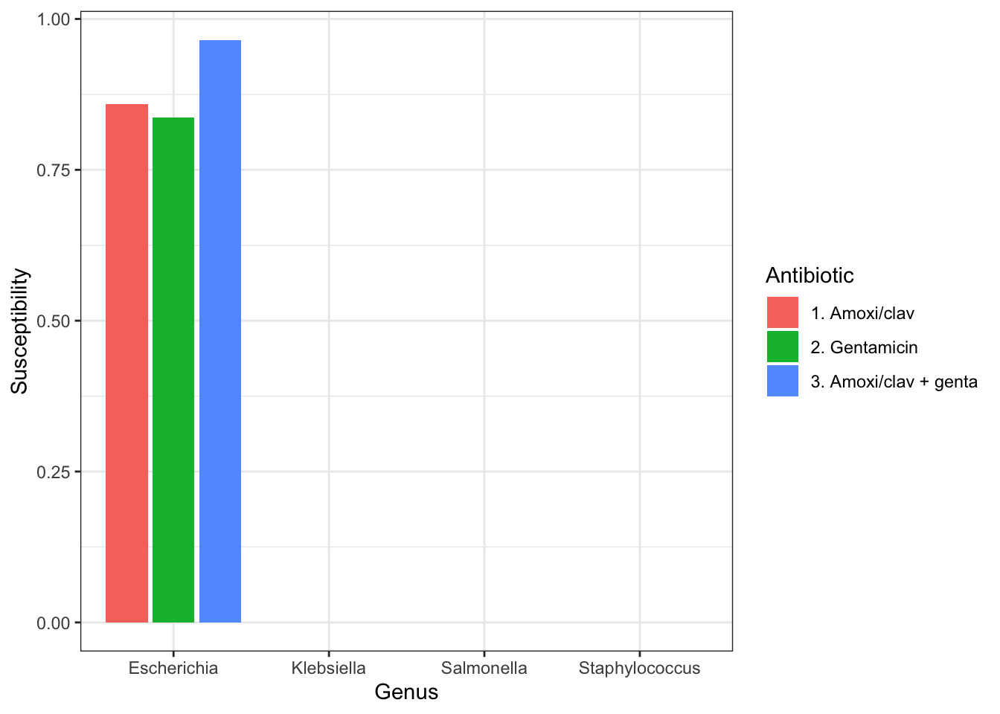
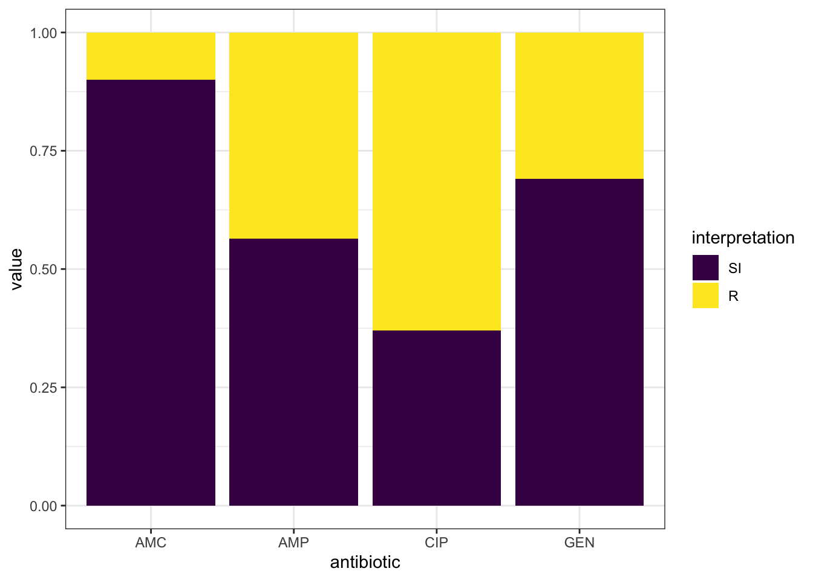
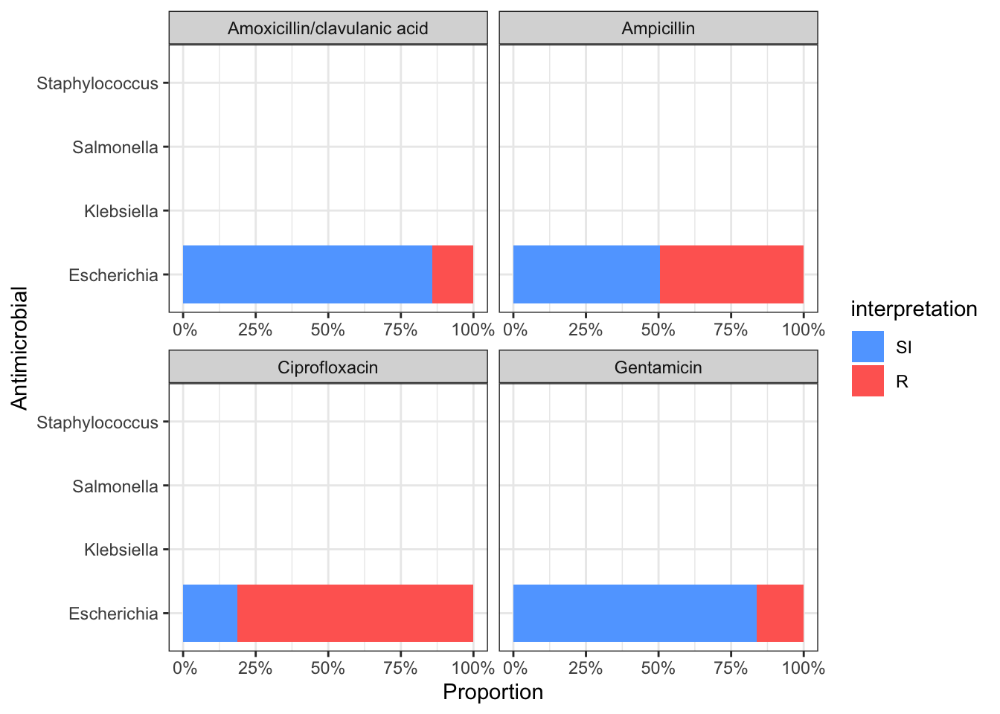

Chapter 6 AMR data analysis
Antimicrobial Resistance is one of the top ten global health threats.
The animal health and human health sector should present AMR surveillance reports to the National Antimicrobial Stewardship Interagency Committee (NASIC)
The flow of AMR data is summarised below.
Sources and flow of AMR data
To carry our analysis of AMR data, we will use the AMR package.
The AMR package is a free open-source package for analysis and prediction of AMR and can be used for antimicrobial resistance data analysis. It contains the complete taxonomic tree of almost all microorganisms, antibiotics, antimycotic and antiviral drugs.
The package can be used for:
- Referencing the taxonomy of microorganisms
- Interpreting raw MIC and disk diffusion values based on the latest CLSI or EUCAST guidelines
- Retrieving antimicrobial drug names, doses and forms of administration from clinical health care records
- Determining first isolates to be used for AMR analysis
- Calculating antimicrobial resistance
- Determining multi-drug resistance or multi-drug resistance organisms etc
The package comes with four fundamental tools:
- Data wrangling prerequisites for microbiology data: these are enabled through the functions specific for microorganisms, antibiotics and antimicrobial results:
- as.mo(): Used to get a microbial ID using algorithms that match almost similar names into a human readable format e.g the ID of Klebsiella pneumoniae is “B_KLBSL_PNMN” where B stands for Bacteria. Furthermore, it is able to group Staphylococci into coagulase positive and negative, streptococci into Lancefield groups
- as.ab(): Used to get an antibiotic IDusing a process similar to as.mo() above. e.g, the ID of gentamicin is GEN.
- as.rsi(): Used to get antibiotic interpretations based on raw MIC values (in mg/L) or disk diffusion values (in mm). Based on your input, it produces the values as S (Susceptible), I (Intermediate) or R (Resistant)while also warning you about invalid values. E.g based on the MIC cut off, <=0.001 will result in S. It does so using either the CLSI or the EUCAST guideline. You can specify the guideline of choice. Currently, it supports CLSI2010:CLSI2019 and EUCAST2011:EUCAST2020
- as.mic(): Used to clean the MIC values into the acceptable format. e.g., “<=0.002;S” will be converted to “<=0.002”
- Enhances existing data and adds new data from inbuilt datasets from this package
- eucast_rules: used to apply EUCAST expert rules to isolates which are graded into three (A, B, C) where: A- there is good clinical evidence for the rule hence applying it has a likelihood of improving the patient care; B- evidence is weak or based on few case reports or experimental data; C- there is no clinical evidence but vitro microbiological data suggests application of the rule
- first_isolate: used to identify the first isolate of every patient using the CLSI guidelines. Similarly, you can identify first weighted isolates for every patient which takes into account key antibiotics of every strain and compares them
- mdro(): For determining the micro-organisms that are multi-drus resistant organisms (MDRO)
- Functions which enable looking up values from the microorganisms dataset. They include: mo_gramstain(), mo_genus, mo_family, mo_phylum etc. e.g., mo_genus("MRSA) will return Staphylococcus.
- Functions which enable looking up values from the antibiotics dataset. They include: ab_atc(), ab_loinc, ab_tradenames. To find out more about how each works, you can use the R inbuilt help function by just adding a question mark infront of the function name e.g., ?ab_atc().
- Analyses data using convenient functions:
- You can calculate microbial susceptibility or resistance and co-resistance with the susceptibility() and resistance() functions or with proportion_R(), proportion_IR(), proportion_I(), proportion_SI, proportion_S functions. In addition, the number of isolates can be determined using the following functions: count_resistance(), count_susceptible() and count_count_all().
- One can plot AMR results with geom_rsi() function which is made from the ggplot2 package
- You can predict antimicrobial resistance for the next years using logistic regression models with the resistance_predict() function
- This package has inbuilt datasets and examples on all the functions to enable the user learn how to use the above actions
- The package contains example datasets, like the one we will be using in this tutorial
- It also contains a WHONET dataset with a similar structure as the files exported by WHONET.
We will learn how to conduct AMR data analysis in the following sections (animal health and human health) using this package.
6.1 Human Health Sector AMR data
This data is mainly collected through the WHONET collection tool
To understand how data from the WHONET tool is analysed and reported, we will use the inbuilt dataset from the AMR package which contains 500 isolates and 53 variables. To access the data, you can type the following codes in your console:
## ── Attaching packages ─────────────────────────────────────── tidyverse 1.3.0 ──## ✓ ggplot2 3.3.3 ✓ purrr 0.3.4
## ✓ tibble 3.1.0 ✓ dplyr 1.0.5
## ✓ tidyr 1.1.3 ✓ stringr 1.4.0
## ✓ readr 1.4.0 ✓ forcats 0.5.0## ── Conflicts ────────────────────────────────────────── tidyverse_conflicts() ──
## x dplyr::filter() masks stats::filter()
## x dplyr::lag() masks stats::lag()library(AMR) # import the AMR package in your global environment
library(cleaner) # import the cleaning packageTo learn more about the dataset, enter ?WHONET on your console.
We will now transform the microorganism IDs using the most comprehensive global index of species currently available. The catalogue can be accessed here. We will do the transformation using the as.mo() function.
Similarly, we can interpret the MIC values using the CLSI 2019 guideline
WHONET_dataset<- WHONET%>%
dplyr::mutate(mo=as.mo(Organism))%>%
dplyr::mutate_at(vars(AMP_ND10:CIP_EE), funs(as.rsi(.,guideline="CLSI2019")))## Warning: `funs()` was deprecated in dplyr 0.8.0.
## Please use a list of either functions or lambdas:
##
## # Simple named list:
## list(mean = mean, median = median)
##
## # Auto named with `tibble::lst()`:
## tibble::lst(mean, median)
##
## # Using lambdas
## list(~ mean(., trim = .2), ~ median(., na.rm = TRUE))- To create the frequency tables, we can use the freq() function from the cleaner package
##
##
## **Frequency table**
##
## Class: character
## Length: 500
## Available: 500 (100%, NA: 0 = 0%)
## Unique: 37
##
## Shortest: 11
## Longest: 40
##
##
## | |Item | Count| Percent| Cum. Count| Cum. Percent|
## |:--|:----------------------------------------|-----:|-------:|----------:|------------:|
## |1 |Escherichia coli | 245| 49.0%| 245| 49.0%|
## |2 |Coagulase-negative Staphylococcus (CoNS) | 74| 14.8%| 319| 63.8%|
## |3 |Staphylococcus epidermidis | 38| 7.6%| 357| 71.4%|
## |4 |Streptococcus pneumoniae | 31| 6.2%| 388| 77.6%|
## |5 |Staphylococcus hominis | 21| 4.2%| 409| 81.8%|
## |6 |Proteus mirabilis | 9| 1.8%| 418| 83.6%|
## |7 |Enterococcus faecium | 8| 1.6%| 426| 85.2%|
## |8 |Staphylococcus capitis | 8| 1.6%| 434| 86.8%|
## |9 |Enterobacter cloacae | 5| 1.0%| 439| 87.8%|
## |10 |Streptococcus anginosus | 5| 1.0%| 444| 88.8%|
##
## (omitted 27 entries, n = 56 [11.20%])- A quick visualisation of the data can be observed using the ggplot_rsi() function which borrows alot from the ggplot2 packages covered earlier in the tutorial
WHONET_dataset %>%
group_by(Country) %>% # group the data by country
dplyr::select(Country, AMP_ND2, AMC_ED20, CAZ_ED10, CIP_ED5) %>% # select the required columns
ggplot_rsi(translate_ab = 'ab', facet = "Country", datalabels = FALSE)+ # translate the antibiotics to the known abbreviations
theme_minimal()
6.2 Human Health Sector AMU/C data
This data is mainly collected using tools like RedCap, Commcare or ODK.
For this tutorial, we will use a sample dataset which contains 150 entries of blood culture isolates. We can use the read_csv function to read the data.
library(tidyverse)
library(AMR)
library(cleaner)
data<- read_csv("https://raw.githubusercontent.com/ThumbiMwangi/R_sources/master/AMR_training_data_human.csv")##
## ── Column specification ────────────────────────────────────────────────────────
## cols(
## date = col_date(format = ""),
## ID = col_character(),
## gender = col_character(),
## ward = col_character(),
## Organism_Name = col_character(),
## AMP = col_character(),
## AMC = col_character(),
## CIP = col_character(),
## GEN = col_character()
## )- From the output, we can see that the columns contained in our dataset. To preview our data, we use the function head().
## # A tibble: 6 x 9
## date ID gender ward Organism_Name AMP AMC CIP GEN
## <date> <chr> <chr> <chr> <chr> <chr> <chr> <chr> <chr>
## 1 2010-01-01 V142 M A1 Esch.coli >=32 16 >=4 <=1
## 2 2010-01-02 H89 F A2 Esch.coli >=32 16 >=4 <=1
## 3 2010-01-03 I98 F A3 Esch.coli >=32 >=32 >=4 <=1
## 4 2010-01-04 N143 M A4 Esch.coli >=32 16 >=4 >=16
## 5 2010-01-05 F101 F A5 Esch.coli >=32 >=32 >=4 <=1
## 6 2010-01-06 T78 F A6 Esch.coli >=32 >=32 >=4 <=1- We can create a frequency table using the freq() function from the cleaner package
##
##
## **Frequency table**
##
## Class: character
## Length: 150
## Available: 150 (100%, NA: 0 = 0%)
## Unique: 2
##
## Shortest: 1
## Longest: 1
##
##
## | |Item | Count| Percent| Cum. Count| Cum. Percent|
## |:--|:----|-----:|-------:|----------:|------------:|
## |1 |F | 100| 66.67%| 100| 66.67%|
## |2 |M | 50| 33.33%| 150| 100.00%|From this, we can easily make two conclusions: Women are more than men and we have no missing data.
We need to clean our data before we can start the analysis. Here, we will:
- Recode the gender column where M=Male and F=Female
- Use the as.mo() function to change the data in the Organism_Name column from text to micro_organisms
- Use the as.rsi() function to transform the antibiotics
We will do all this cleaning using the dplyr package as seen below:
data1<- data%>%
mutate(gender=recode(gender, "M"="Male", "F"="Female"))%>% # recode M and F
mutate(Organism_Name=as.mo(Organism_Name))%>% #Transform input to a microorganism ID
mutate_at(vars(AMP:GEN),as.mic)%>%# Transform input to valid mic levels
mutate_at(vars(AMP:GEN), funs(as.rsi(.,guideline="CLSI 2019"))) # interpret MIC values
head(data1)## # A tibble: 6 x 9
## date ID gender ward Organism_Name AMP AMC CIP GEN
## <date> <chr> <chr> <chr> <mo> <rsi> <rsi> <rsi> <rsi>
## 1 2010-01-01 V142 Male A1 B_ESCHR_COLI R I R S
## 2 2010-01-02 H89 Female A2 B_ESCHR_COLI R I R S
## 3 2010-01-03 I98 Female A3 B_ESCHR_COLI R R R S
## 4 2010-01-04 N143 Male A4 B_ESCHR_COLI R I R R
## 5 2010-01-05 F101 Female A5 B_ESCHR_COLI R R R S
## 6 2010-01-06 T78 Female A6 B_ESCHR_COLI R R R S- We now apply the EUCAST rules on the antimicrobial results using the eucast_rules() function. For example, it will force ampicillin (AMP) to be R if amoxicillin/clavulanic acid is R.
- Since we have the microbial ID, we are able to add some taxonomic properties as shown below
data1<- data1%>%
mutate(gramstain=mo_gramstain(Organism_Name))%>% # add the gram stain
mutate(genus=mo_genus(Organism_Name))%>%
mutate(species=mo_species(Organism_Name))6.2.1 First isolates
Analysis of AMR requires that you must only include the first isolate of every patient per episode (e.g. one year) otherwise one can end up getting an overestimate or underestimate of the resistance of an antibiotic, especially in inpatient data. Similarly, this is a requirement in the CLSI.
To ensure you have included the first isolate, use the first_isolate() function from the AMR package. By default, it uses one year per episode and one can change that.
first_episode <- data1 %>%
dplyr::mutate(first = first_isolate(col_date = "date", col_patient_id = "ID"))All our isolates are from different patients.
If we use the inbuilt dataset called example_isolates and run the first_isolate column, we can see that only 65% are suitable for resistance analysis. To filter the data on first isolates, we can use the filter_first_isolate() function.
## NOTE: Using column 'date' as input for `col_date`.## NOTE: Using column 'patient_id' as input for `col_patient_id`.- In some instances, you can have some isolates that are of different strains hence should be included in the antibiogram. To ensure you do not exclude isolates, you weight isolates based on their antibiogram using the key_antibiotics() function. For example, if there is a column with a name like key_antibiotic_name, the first_isolate() function automatically uses it to determine the first weighted isolates.
weighted_data1<-example_isolates%>%
mutate(keyab = key_antibiotics()) %>%
mutate(first_weighted = first_isolate())%>%
filter_first_weighted_isolate() # for filtering only where the weighted_isolate column is TRUE## NOTE: Using column 'keyab' as input for `col_keyantibiotics`. Use
## col_keyantibiotics = FALSE to prevent this.We can now observe that 69.8% of our data is suitable for resistance analysis.
Now back to our data1 dataset. We can create frequency tables to visualise our genus and species columns earlier created.
##
##
## **Frequency table**
##
## Class: character
## Length: 150
## Available: 150 (100%, NA: 0 = 0%)
## Unique: 4
##
## Shortest: 16
## Longest: 21
##
##
## | |Item | Count| Percent| Cum. Count| Cum. Percent|
## |:--|:---------------------|-----:|-------:|----------:|------------:|
## |1 |Escherichia coli | 92| 61.33%| 92| 61.33%|
## |2 |Salmonella enterica | 29| 19.33%| 121| 80.67%|
## |3 |Staphylococcus aureus | 25| 16.67%| 146| 97.33%|
## |4 |Klebsiella pneumoniae | 4| 2.67%| 150| 100.00%|- If we want to get a quick visualisation of the number of isolates in the different bug-drug combinations, we use the bug_drug_combinations() function
## # A tibble: 6 x 6
## mo ab S I R total
## <chr> <chr> <int> <int> <int> <int>
## 1 E. coli AMP 4 39 42 85
## 2 E. coli AMC 30 31 10 71
## 3 E. coli CIP 12 4 70 86
## 4 E. coli GEN 59 13 14 86
## 5 K. pneumoniae AMP 0 0 4 4
## 6 K. pneumoniae AMC 0 1 0 1## Use 'format()' on this result to get a publishable/printable format.- Similarly, we can select columns based on the class of antibiotics they are in
## Selecting fluoroquinolones: column 'CIP' (ciprofloxacin)## # A tibble: 4 x 6
## mo ab S I R total
## <chr> <chr> <int> <int> <int> <int>
## 1 E. coli CIP 12 4 70 86
## 2 K. pneumoniae CIP 1 0 1 2
## 3 S. aureus CIP 0 0 0 0
## 4 S. enterica CIP 0 26 2 28## Use 'format()' on this result to get a publishable/printable format.6.2.2 Resistance percentages
- The resistance() and susceptibility() functions can be used to calculate the resistance and susceptibility respectively.
## [1] 0.1- Similarly, if you want to calculate resistance based on the ward, you may first group the data and use the summarise() function.
## # A tibble: 2 x 2
## gender ampicillin
## <chr> <dbl>
## 1 Female 0.405
## 2 Male 0.5- To be able to count the number of isolates with every group, you use the n_rsi() function
## # A tibble: 2 x 3
## gender ampicillin available
## <chr> <dbl> <int>
## 1 Female 0.405 79
## 2 Male 0.5 38- We can also get the proportion of multiple antibiotics so as to calculate empiric susceptibility of combination therapies in an easier way:
data1 %>%
group_by(genus) %>%
summarise(amoxicillin = susceptibility(AMC),
gentamicin = susceptibility(GEN),
amoxiclav_genta = susceptibility(AMC, GEN))## Warning: Introducing NA: only 1 results available for AMC (`minimum` = 30).## Warning: Introducing NA: only 28 results available for AMC (`minimum` = 30).## Warning: Introducing NA: only 0 results available for AMC (`minimum` = 30).## Warning: Introducing NA: only 2 results available for GEN (`minimum` = 30).## Warning: Introducing NA: only 29 results available for GEN (`minimum` = 30).## Warning: Introducing NA: only 25 results available for GEN (`minimum` = 30).## Warning: Introducing NA: only 2 results available for AMC, GEN (`minimum` = 30).## Warning: Introducing NA: only 28 results available for AMC, GEN (`minimum` =
## 30).## Warning: Introducing NA: only 25 results available for AMC, GEN (`minimum` =
## 30).## # A tibble: 4 x 4
## genus amoxicillin gentamicin amoxiclav_genta
## <chr> <dbl> <dbl> <dbl>
## 1 Escherichia 0.859 0.837 0.965
## 2 Klebsiella NA NA NA
## 3 Salmonella NA NA NA
## 4 Staphylococcus NA NA NAFrom the CLSI guidelines, a minimum of 30 isolates are required to calculate susceptibility. For genus that have less than 30 isolates, susceptibility is not calculayed.
Finally, we can be able to visualise our data
data1 %>%
group_by(genus) %>%
summarise("1. Amoxi/clav" = susceptibility(AMC),
"2. Gentamicin" = susceptibility(GEN),
"3. Amoxi/clav + genta" = susceptibility(AMC, GEN)) %>%
# pivot_longer() from the tidyr package transforms the data by "lengthening" it:
tidyr::pivot_longer(-genus, names_to = "antibiotic") %>%
ggplot(aes(x = genus,
y = value,
fill = antibiotic)) +
geom_col(position = "dodge2")+theme_bw()+labs(x="Genus", y="Susceptibility", fill="Antibiotic")## Warning: Introducing NA: only 1 results available for AMC (`minimum` = 30).## Warning: Introducing NA: only 28 results available for AMC (`minimum` = 30).## Warning: Introducing NA: only 0 results available for AMC (`minimum` = 30).## Warning: Introducing NA: only 2 results available for GEN (`minimum` = 30).## Warning: Introducing NA: only 29 results available for GEN (`minimum` = 30).## Warning: Introducing NA: only 25 results available for GEN (`minimum` = 30).## Warning: Introducing NA: only 2 results available for AMC, GEN (`minimum` = 30).## Warning: Introducing NA: only 28 results available for AMC, GEN (`minimum` =
## 30).## Warning: Introducing NA: only 25 results available for AMC, GEN (`minimum` =
## 30).## Warning: Removed 9 rows containing missing values (geom_col). - Similarly, we can use the geom_rsi() function which transforms data by calculating the proportions then plotting the data in stacked bars as shown below:

- To have the antibiotic codes converted to the official WHO names, omit the translate_ab=FALSE
data1 %>%
group_by(genus) %>%
ggplot_rsi(x = "genus",
facet = "antibiotic",
breaks = 0:4 * 25,
datalabels = FALSE) +
coord_flip()+theme_bw()## Warning: Removed 18 rows containing missing values (position_stack).
6.2.3 Independence test
- We can compare resistance of antibiotics of different groups. For example, we can compare amoxicillin resistance for two different hospitals
check_AMX <- example_isolates %>%
filter(hospital_id %in% c("A", "D")) %>% # filter on only hospitals A and D
dplyr::select(hospital_id, AMX) %>% # select the hospitals and amoxicillin
group_by(hospital_id) %>% # group on the hospitals
count_df(combine_SI = TRUE) %>% # count all isolates per group (hospital_id)
pivot_wider(names_from = hospital_id, # transform output so A and D are columns
values_from = value) %>%
dplyr::select(A, D) %>% # and only select these columns
as.matrix() # transform to a good old matrix for fisher.test()
check_AMX## A D
## [1,] 70 241
## [2,] 108 315- We now apply the chi.square test
##
## Fisher's Exact Test for Count Data
##
## data: check_AMX
## p-value = 0.3837
## alternative hypothesis: true odds ratio is not equal to 1
## 95 percent confidence interval:
## 0.5903086 1.2114286
## sample estimates:
## odds ratio
## 0.8473559- We can observe that amoxicillin resistance found in isolates from patients in hospital A and D are really not statistically significant. ## Animal Health sector AMR data
-This data is mainly collected using the KABS collection tool
6.3 Animal Health Sector AMU/C data
-This data is mainly collected using the KABS collection tool